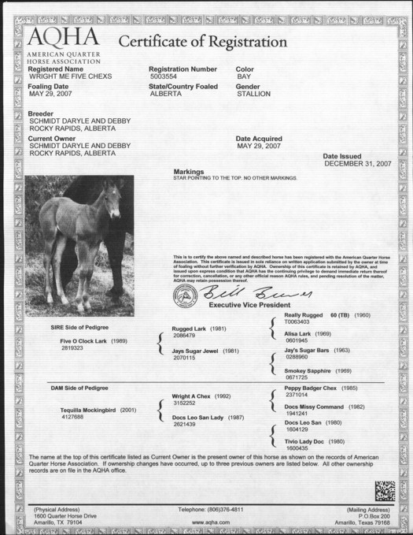

Home
Training
Clinics & Lessons
Sale Barn
Photo Gallery
Links
News /FAQ
Contact
Wright Me Five Chexs
2007 AQHA Bay Stallion
Sire: Five OClock Lark
Dam: Tequilla Mockingbird
Bred for Performance. This young guys pedigree speaks for itself. Halterbroke and ready for you.
